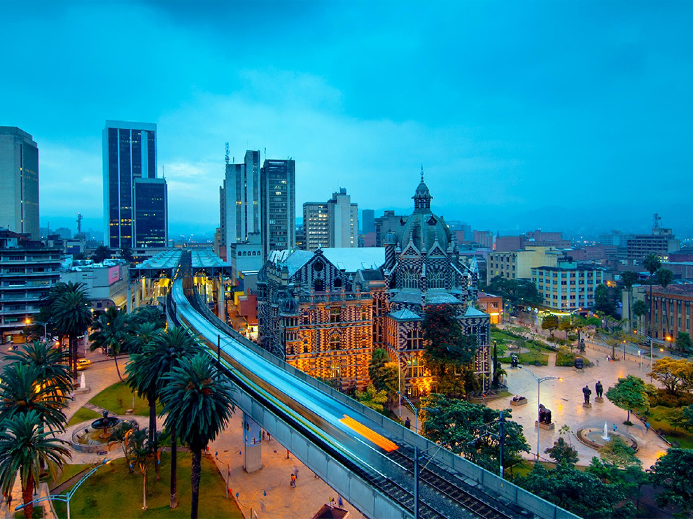
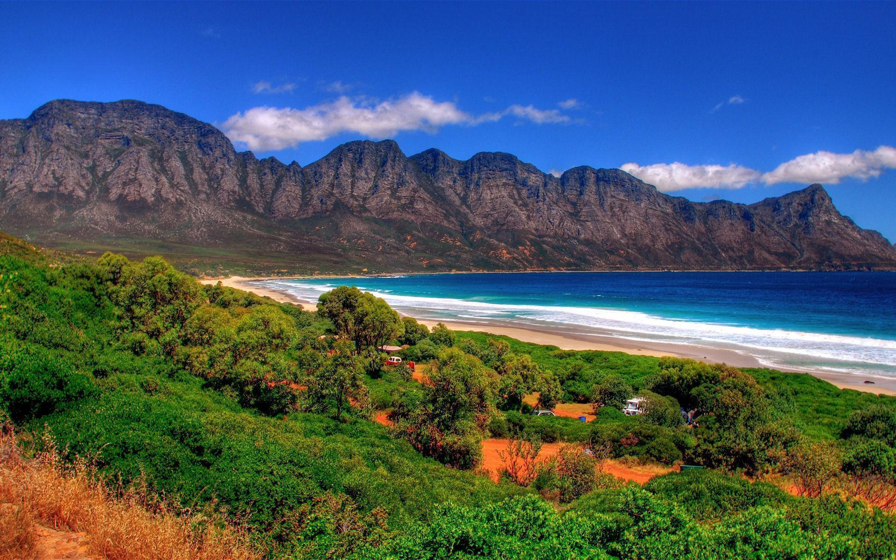
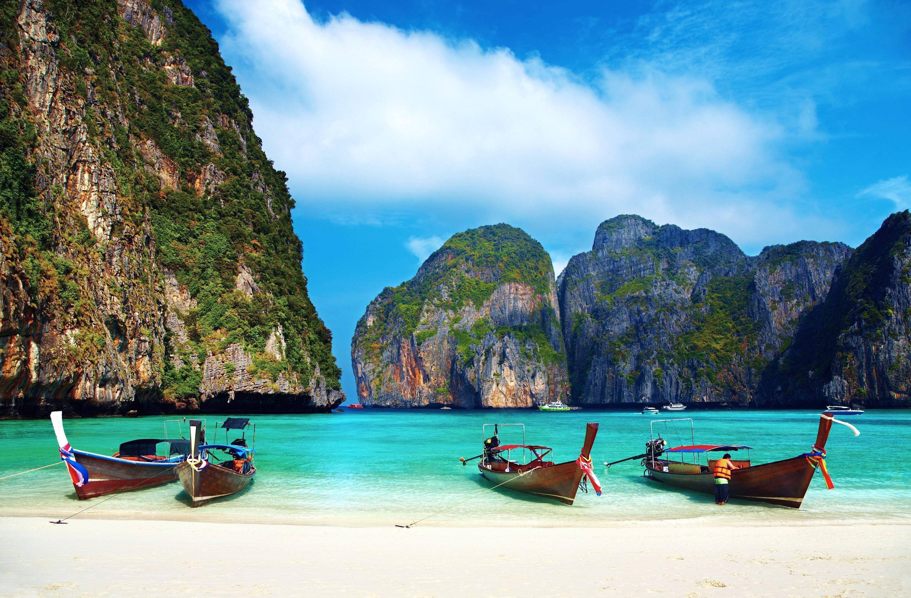
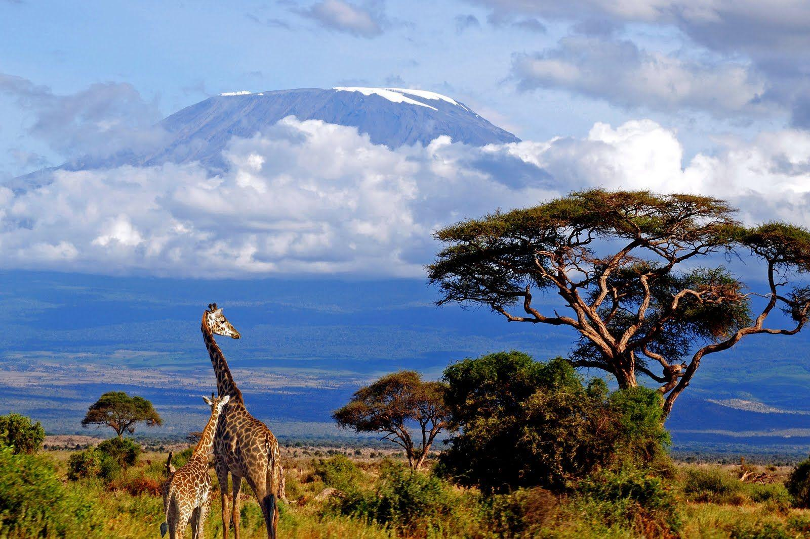

La Colombie est un pays dynamique et diversifié situé au nord-ouest de l’Amérique du Sud, bordé par par le Venezuela, le Brésil, le Pérou, l'Équateur et le Panama. Son paysage est incroyablement varié, avec des paysages luxuriants des forêts tropicales, des montagnes imposantes, des plages immaculées et de vastes plaines. Le pays est réputé pour sa riche biodiversité, avec de nombreuses espèces de plantes et d'animaux que l'on ne trouve nulle part ailleurs sur Terre. L'une des caractéristiques les plus célèbres de la Colombie est la cordillère des Andes, qui s'étend à l'ouest de la Colombie. partie du pays et influence son climat et sa géographie. La capitale, Bogotá, est nichée haut dans les contreforts andins et sert de centre politique, économique et culturel de la nation. Malgré sa beauté naturelle et sa richesse culturelle, la Colombie a été confrontée à des défis tels que la politique l'instabilité, le trafic de drogue et les conflits armés. Cependant, ces dernières années, le pays a fait des progrès significatifs dans l’amélioration de la sécurité et la promotion du développement économique. Le tourisme se développe en Colombie, les visiteurs étant attirés par ses paysages époustouflants, ses villes historiques et chaude hospitalité. De l'architecture coloniale de Carthagène aux plants de café luxuriants de la Zona Cafetera, Colombie offre un large éventail d'expériences aux voyageurs en quête d'aventure, de détente, et immersion culturelle.

L’Afrique du Sud, située à la pointe sud du continent africain, est un pays d’une diversité remarquable, tant par ses paysages que par sa population. Connue sous le nom de Nation arc-en-ciel, elle est célébrée pour son multiculturalisme, sa beauté naturelle époustouflante et son histoire complexe. Le pays présente des caractéristiques géographiques diverses, notamment de vastes savanes, des montagnes escarpées, des côtes époustouflantes et des régions semi-désertiques. L'emblématique Montagne de la Table surplombe la ville du Cap, tandis que les montagnes du Drakensberg s'étendent sur la partie orientale du pays. L'Afrique du Sud abrite également des réserves fauniques renommées telles que le parc national Kruger, où les visiteurs peuvent observer les Big Five (lion, éléphant, buffle, léopard et rhinocéros) et d'autres espèces dans leurs habitats naturels. L’Afrique du Sud possède une riche tapisserie culturelle façonnée par les interactions des peuples autochtones africains, des colons européens (principalement néerlandais et britanniques), des travailleurs indiens et indonésiens et des immigrants plus récents du monde entier. Cette diversité se reflète dans les langues du pays, avec 11 langues officielles reconnues, dont l'isiZulu, l'isiXhosa, l'afrikaans, l'anglais et d'autres. L'économie de l'Afrique du Sud est la plus industrialisée et la plus diversifiée d'Afrique, avec des secteurs tels que l'exploitation minière, l'agriculture, l'industrie manufacturière et le tourisme qui jouent un rôle clé. Le Cap et Johannesburg sont des pôles économiques majeurs, tandis que des villes comme Durban et Port Elizabeth contribuent également de manière significative à l'économie du pays. Le tourisme est une industrie vitale en Afrique du Sud, attirant des millions de visiteurs chaque année avec ses paysages à couper le souffle, ses villes animées, ses sites du patrimoine culturel et ses possibilités de safaris animaliers et d'aventures en plein air. Les festivals culturels, la musique, la cuisine et la scène artistique du pays contribuent également à son attrait en tant que destination pour les voyageurs du monde entier.

Le Royaume de Thaïlande, est un pays d'Asie du Sud-Est réputé pour son riche patrimoine culturel, ses paysages époustouflants, ses villes dynamiques et son hospitalité chaleureuse. Située au centre de la péninsule indochinoise, la Thaïlande partage des frontières avec le Myanmar, le Laos, le Cambodge et la Malaisie et possède des côtes le long du golfe de Thaïlande et de la mer d'Andaman. La capitale et plus grande ville du pays est Bangkok, une métropole animée connue pour ses temples ornés, ses rues animées et ses gratte-ciel modernes. Bangkok est le centre politique, économique, culturel et spirituel de la Thaïlande, offrant aux visiteurs un mélange de traditions anciennes et de style de vie contemporain. Le patrimoine culturel thaïlandais est profondément enraciné dans le bouddhisme Theravada, qui imprègne tous les aspects de la vie du pays. Les visiteurs peuvent explorer de magnifiques temples tels que Wat Phra Kaew (Temple du Bouddha d'émeraude) et Wat Pho (Temple du Bouddha couché), qui présentent une architecture exquise, des œuvres d'art complexes et un environnement serein. Au-delà de Bangkok, la Thaïlande possède des paysages diversifiés allant des jungles luxuriantes et des plages immaculées aux régions montagneuses et plaines fertiles. La ville du nord de Chiang Mai est célèbre pour ses temples historiques, ses marchés animés et ses possibilités de randonnées et de sports d'aventure dans les montagnes environnantes. Au sud, les îles tropicales comme Phuket, Koh Samui et Krabi attirent les voyageurs avec leurs plages de sable blanc, leurs eaux cristallines et leur vie marine animée. Malgré ses nombreux attraits, la Thaïlande est confrontée à des défis tels que la dégradation de l'environnement, l'inégalité des revenus et l'instabilité politique. Cependant, la résilience et le courage du peuple thaïlandais continuent de faire avancer le pays, ce qui en fait une destination fascinante et dynamique pour les voyageurs du monde entier.

La Tanzanie, située en Afrique de l'Est, est réputée pour sa beauté naturelle à couper le souffle et sa faune diversifiée. Abritant le plus haut sommet d'Afrique, le mont Kilimandjaro, et l'emblématique parc national du Serengeti, la Tanzanie offre des opportunités inégalées d'aventures et de safaris. Le littoral du pays, le long de l'océan Indien, regorge de plages immaculées et de récifs coralliens vibrants, ce qui en fait un paradis pour les amateurs de plage et de plongée sous-marine. La Tanzanie est également riche en patrimoine culturel, avec plus de 120 groupes ethniques contribuant à sa mosaïque dynamique de traditions, de musique et de cuisine. La ville animée de Dar es Salaam constitue le centre économique du pays, tandis que Stone Town, à Zanzibar, offre un aperçu de son passé historique en tant que centre commercial et culturel. L'engagement de la Tanzanie en faveur de la conservation de la faune est évident dans ses nombreux parcs nationaux et réserves, notamment la zone de conservation de Ngorongoro et la réserve de gibier de Selous. Malgré sa richesse naturelle, la Tanzanie est confrontée à des défis tels que la pauvreté, l'accès aux soins de santé et la durabilité environnementale, mais sa résilience et sa beauté continuent de captiver les visiteurs du monde entier.